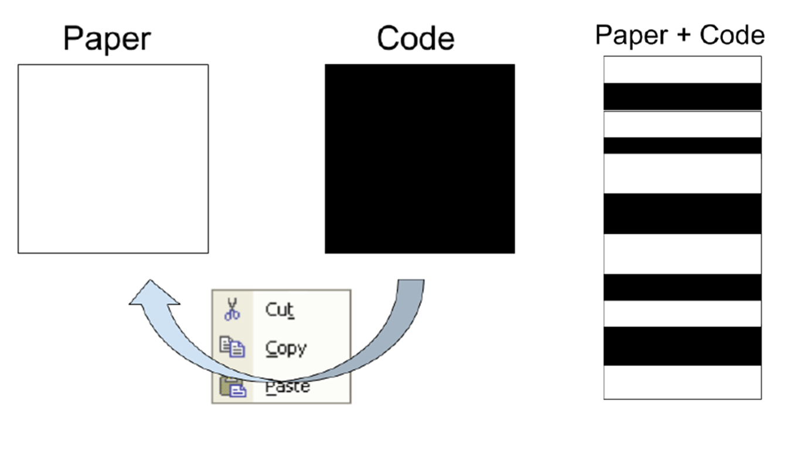
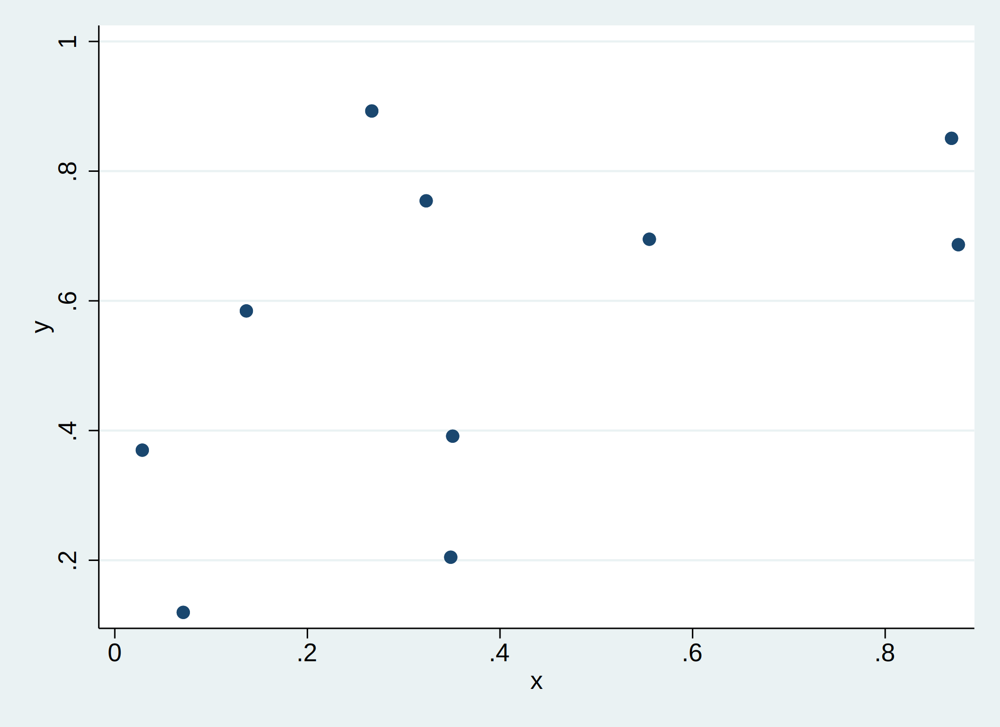

/ Stata Do File converted from Jupyter notebook /
# Dynamic Documents with Jupyter Notebooks
## Before We Begin
- Special thanks to Oscar Barriga Cabanillas for helping out today
- Thank you for BITSS for organizing
- How has it been so far?
- A Question:
- How familiar are you with python? Jupyter?
- What are you thinking of getting out of this talk?
## How to watch this presentation: - Either: - git clone the repository - Start up jupyter lab - open presentation.ipynb - follow along - Or: - Go to the repository and press the Launch Binder Button - To be explained later.
## Why Dynamic Documents?
Dynamic Documents are a part of the bigger picture of Reproducible Science. Sure, there is a fixed cost; BUT, they make my life easier in these ways:
- Short term: Easier to document fresh out of the oven results
- Medium term: Fast, reliable and tractable new results
- Long term: You can see how everything was created
## What are Dynamic Documents?
Based on principles of literate programming, we aim at combining code and paper in one single document
- Best framework to achieve the holy grail of one-click reproducible workflow
- Best two current implementations: RMarkdown (R) & Jupyter (Python).
- Stata is catching up: We will come back to this in a second
## The State of Things Now
Currently, the code and the narrative components live in separate universes

## Part of Larger Workflow
- Dynamic documents are best used as part of a larger organized workflow
- Structuring folders: Data, analysis, output
- Documenting code
- Combining both into a final document: Pre analysis or final paper
## Markdown’s Entrance
- In terms of writing the “paper”/documentation part of dynamic documents, there are many solutions
- Latex, HTML, RST (ReStructured Text)
- But most have honed in on using Markdown
- Markdown is an easy way to write formatted text in a plain text format
- But without as verbose and difficult of a syntax like latex/HTML
- Although basic markdown has the basics for formatting, creating tables, adding figures
- We will use Pandoc, which is used in both the Stata and R sessions
## Markdown Cheatsheet
There are loads of markdown cheatsheats on the web. One can be found here
## Headings
Title -> # Title
Section -> ## Section
Subsection -> ### Subsection
Subsubsubsection -> #### Subsubsubsection
## Lists
- My list
- an italic and bold nested list
- My List
- an italic and bold nested list
## Math
We assume that comparative advantage is $\alpha$ and $\alpha = \beta + \gamma$
We assume that comparative advantage is $\alpha$ and $\alpha = \beta + \gamma$
$$\begin{aligned} y_{it} = X_{it}\beta + \varepsilon_{it} \ X_{it} = Z_{it}\gamma + \nu_{it} \end{aligned}$$
$$\begin{aligned}
y_{it} = X_{it}\beta + \varepsilon_{it} \\
X_{it} = Z_{it}\gamma + \nu_{it}
\end{aligned}$$
## What is Pandoc?
- Pandoc is sort of what it says: pan (all), doc (document)
- It’s a way to convert between and across different file formats
- Word -> HTML
- Latex -> Markdown
- HTML -> XML
- Anything to anything
- See Pandoc’s website for all input and output filetypes
## The Magic of Pandoc
- Pandoc and Markdown allows you to create one file that can then be used in many different places
- Example:
- You’re writing your CV and want to put it up in various places.
- Your website needs HTML
- One job posting allows PDF
- One job posting only allows Word
- Ordinarily, you would need to have three versions, Word, HTML, PDF
- This might get unruly as you change one but forget to change the other
- What if there’s another file format you might need?
- With Pandoc and markdown, you would:
- write your CV in markdown
- convert to PDF, Word and PDF with pandoc
## What are Jupyter Notebooks?
- A way to do literate programming and dynamic documents
- Provide code and writing/analysis, on a language agnostic platform
- Meaning that it is not restricted to just one language
- Currently there are so-called kernels for many languages
- Including Stata, Python, R, C, Golang, C++, Fortran and more coming!
- Uses the power of Markdown/Latex Math and Code to tell a story and provide an efficient workflow
- Convert into several different formats including Latex, HTML, Presentations etc…
- The Jupyter server is also available in other text editors such as Atom and VS Code.
- And now available in STATA!
## Under the Hood
- You can think of Jupyter as broadly being made up of two parts:
- A JSON document that organizes text between markdown, code, figures, widgets, etc…
- A server that loads a “kernel” with a particular language and knows how to translate the markdown to formatted text and the code to execution
- A web interface (although not required)

## Why Jupyter Notebooks?
- Jupyter is ubiquitous
- Jupyter is used by basically all of the data science community
- Jupyter is used by other software (VS Code, Atom/Hydrogen)
- Since Jupyter is a JSON document and built using web tools, anything that uses webtools can use it
- Science and publishing is changing (PDFs are becoming old, open access and web journals are becoming more popular)
- Present results in a dynamic way
- Interactive
- More efficient to show quick interactive widget to experiment with colleagues/advisors than 50 figures in a static PDF
## Extensions
JupyterLab (the web interface) comes with many extensions for anything you might want:
- A language server
- multicursor support
- git integration
- and more…
## Running Code
. set obs 10 Number of observations (_N) was 0, now 10.
. . gen x = runiform()
. gen treat = x > .2
. gen y = runiform()
## Figures
. twoway scatter y x

## Kernel Magics
- Many Jupyter kernels have something called magics
- A way to make certain actions easy without having to write too much code
- Often language specific
- All Stata magics can be found here
| y | Coefficient | Std. err. | t | P>|t| | [95% conf. interval] |
|---|
| treat | .1389734 | .2420288 | 0.57 | 0.584 | -.4333337 | .7112805 |
| x | .3280329 | .3893131 | 0.84 | 0.427 | -.5925464 | 1.248612 |
| _cons | .3321298 | .1481657 | 2.24 | 0.060 | -.0182265 | .682486 |
## Exporting
- Exporting to HTML, PDF and slides is possible through the menu: File -> Export Notebook as -> PDF
## Binder and Hosting Notebooks
- Jupyter is great and all, but what if you advisor/boss doesn’t have Jupyter installed?
- What if they do, but they don’t have all the dependencies needed for your cool dashboard?
- That’s where binder comes in
- Binder uses
docker to create a containerized version of your notebook with all dependencies installed and anyone can access it even if they don’t have jupyter installed at all.
- They just need a web browser
- We’ve already seen how this works, either with the dashboard or with this very presentation!
- All you need is a public github repository and notebook in that repository and that’s it!
- Waiting time for spinning up the notebook will vary
- While it’s spinning it up, any questions so far?
## Port-forwarding and setting up Jupyter to work on a server
- Many people might have servers in their universities/organizations that are more powerful than a laptop.
- Jupyter allows the ability to run a notebook locally (on your laptop screen), but using the power of the server.
- This requires jupyter being installed on the server
- This isn’t a difficult thing to do for a sysadmin, so it’s worth finding out whether that’s possible
### Setting up jupyter on a server
- The first thing you need to do is log on to the server and start a jupyter instance:
jupyter notebook --no-browser --port=8888
## Taking all this to Pure Text
- One drawback of jupyter (besides dependencies) is the fact that you need to install all of this and use a browser
- Not very good for version control
Rmd files (used with RMarkdown) are just markdown files with code cells.
- Great for version control
- Readble
- Easy to share and read in its raw form
- Can we do this with Jupyter?
## Shameless self-promotion
- Export notebook to a do-file!
https://github.com/amichuda/jupyter-doexport
## A Stata Equivalent?
stata-markdowndyndocputdocxputpdf
## Other Extras not Covered
jupyter-cachecodebraidbinder and docker